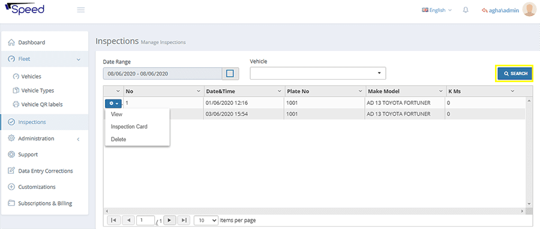
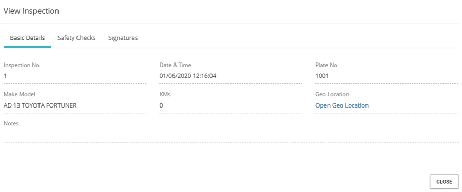

Inspections
The inspection module allows you to see all the vehicles inspected. It shows a list in which you can see all the vehicles, date & time when inspected, make model, and other details. Search tab offers you seek for a certain vehicle by adding either date range or vehicle. So, you can select a specific date range and acquire the list of all the vehicles inspected during that period.

